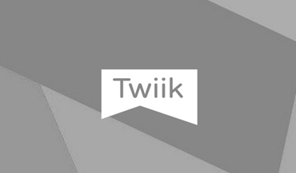
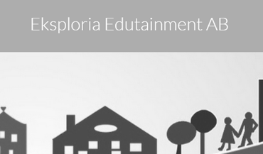
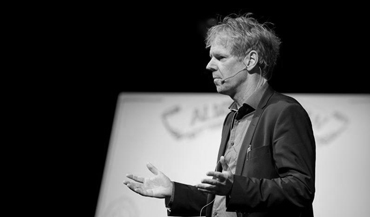

Vad vill vi stödja och jobba för?
Ciermach fokuserar på att accelerera de digitala möjligheterna inom svensk industri och samhällsorganisationer. Den nya digitala livsstilen har kommit över oss på bara 10 år. Skillnaden är fundamental i hur människor ändrat sitt beteende pga att all information nu är tillgängligt i det som förr kallades en mobiltelefon, nu en Smartphone. Men väldigt mycket finns kvar att göra för företag och offentlig sektor.
Vilka är våra kompetensområden?
Digital delningsekonomi
Twiik bildades som ett exempel på vad digital delningsekonomi kan betyda byggd på människors egna profiler avseende sitt välmående samt öppna innovationssystem till stöd för beteendeförändring av individens eget välbefinnande. I Twiiks fall betyder öppna innovationsgränssnitt att externa coacher kan lägga upp digitala program med utmaningar till stöd för den enskilde användaren. Läs mer om vår digitala värdegrund ”Mohammed och berget”
Internet of Things
För närvarande har Ciermach ett uppdrag som handlar om att ta tillvara möjligheterna med Internet of Things på Sony Mobile. Uppdraget vänder sig mot all industri som vill skapa effektivitetsfördelar genom att ha kontroll på utrustning/verktyg/maskiner ”on the move”. Den centrala frågan är: Var hittar jag grejen?
Klusterutveckling
Christer Månsson var VD för
Media Evolution . En avgörande bas för snabb klusterutveckling är att samla många intressenter och medlemmar och aktivt skapa match-making mellan dessa aktörer. Ett brett nätverk finns inom kluster och klusterutveckling i södra Sverige. Ett mindre uppdrag har även utförts i Härnösands kommun.
Hantering av stora datamängder
Under Q3 och Q4 2015 har Marcus Månsson ett uppdrag i att skapa en informationsvisualisering byggt på en stor mängd historisk data. Visualiseringen ska framställa mönster av hur importer till Sverige har skett i historien. Detta görs i samarbete medLivrustkammaren.
Webbutveckling
Under Q2 och Q3 2015 var Marcus Månsson en del av ett team som utvecklade
Twiiks webbklient mot ett RESTful API.
Klienten byggdes med hjälp av: Javascript, html, sass, jade, jQuery Mobile, ajax, d3.js.
Telekom
Erfarenheterna går tillbaka till Ericssons GSM utveckling på 80-talet.
Europolitan (nuvarande Telenor) uppstart och utveckling under 90-talet.
Bildandet av Djuice i Norge. Det börsnoterade bolaget Aspiro som bildades
något innan millenieskiftet och helt nyligen blev förvärvat av musiktjänsten Tidal.
Vilka investeringar har vi så här långt?

Digital Hälsa: Twiik Digitala stöd för förbättrad hälsa

Digital Hållbarhet: Eksploria Digitala stöd för en hållbar planet
Vilka är vi?

Christer Månsson
Marcus Månsson